Most important computer application must manage, update and query datasets
more important with AI
What are Data-Intensive Systems
Relational databases (MySQL, Oracle)
Many system facing similar concerns
Typical Challenges:
Reliability
Concurrency
Performance
Access interface
Security
Key issue and themes
logical dataset(how to store data): table, graph
data mgmt system
Physical storage (data structure), eg B Tree (order data by first name), a big array, variable length tuple, etc.
Clients / users: get data, run computation, update data
Administrator: manage the system functionality
Examples
Relational databases:
ODBC: a protocol and standard API to query
Tensorflow:
Physical Storage: Row-based storage and col-based storage
NCHW: N=batch, C = column, H = height, W= wides
Apache Kafka: message queue
Logical Data Model: streaming of record(a lot of bytes, do not care about structure)
Partitions over many machines
compaction: for older data to store more efficiently
Apache Spark RDDs: map reduce
Message queue System:
What shoule happen if two consumers read() at the same time?
They should get different message
When should get same message: different consumers works on same pictures
API design - get same message or different
What should happed if a consumer reads a message but then immediately crashes
need transactions
API design: start() and done(), a timeout (if does not call done() after timeout, restart)
Can a producer put in 2 messages atomically?
eg, Venmo transfer to 3 friends.
design API to do that atomically
Two Big Ideas
Declarative interfaces: what they want, not how to do it
Examples: SQL,
Transactions
Examples: SQL databases (), Apache Spark/MapReduce, Stream processing systems
History:
Navigational Databases: a graph of records, an API to navigate from the links
Relational DB model: table with unique key identifying each row
eg, System R, Ingres, Oracle
Relation = table with unique key identifying each row
Relational database: data independence ++;
Lec2 System R
System R
System R Design
Already have essenstial the same architecture as a modern RDBMS
Also have: transcations, multiple isolation levels, indexes
relational database
Navigational vs Relational Database
Navigational: some query are fast, some are slow
manually design data stracture
Why: some query may need to process more links and nodes
Why relational model more flexible:
do not have a fixed way of representing the "links" to query the data
can have all kinds of datastructure, like index on a column, like links
Why was System R build in 3 phases?
big project, try things, do next generation
Phase 0: single user, left out concurrency and locking
Storage in R Phase 0:
XRM like key-value store
table: 32-bit pointers points to different domain
have reverse mapping (domain => tuple ID)
Think the table as a big array of bytes: 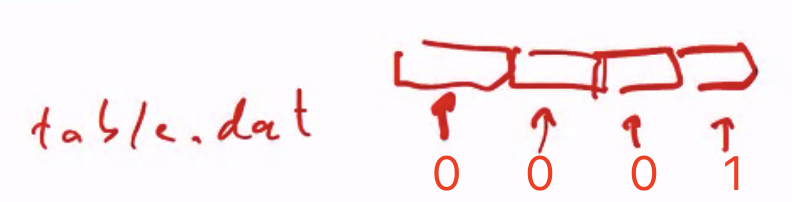
0, 1 is the row number (this is a row based table)
columns are stored in different files
Why not store as "name, jobs, column"?
save space for duplicated values
make each tuple is fixed length, can know the position by calculating the bias
easy to add new tuples, do not need to rewrite anything
What was the issue with this design
Too many IOs
for every record, need to read from different files, seek time latency
Use inversion to find TIDs with a given value for a file => get a list of TID, then get all the values
Storage System R Phase 1
B-tree nodes contain values of the columns indexed on; data pages can contain all fields of the record
Searching for a range is faster than XRM
look at one record, and print all the fields is faster than Phase 0 (Read all fields from data page may only need single IO)
API
EXISTS, LIKE, OUTER JOIN
prepare() with a placeholder in SQL
Query Optimizer
how did system R optimizer change after Phase 0?
changed metric
Phase 0: metric is number of tuples match a query, only look at IO cost
Phase 1: count all IO cost of all data structure, also take CPU time into considerations (total IO + CPU time)
Query Compliation
Why did System R complie queries to assembly code?
assemble SQL, fast, easy
have an interpreter for SQL in Phase 0, slow
Do database still do assemble today?
NO.
Because CPU is faster to do things like checking equal, the most time consuming thing is waiting for IO
Assemble: make the CPU calcuation faster
maintain compiler is expensive
But do it sometime: need to optimize compute time for analysitic database
Recovery
transaction failure: applications are allowed to abort transcation in the middle
Storage Media Failure / Disk Failure
have a backup disk, sync
backup disk need to have change log and older tables
change log on backup disk and primary disk
before write to main disk, write to change log on backup disk. Periodically write to backup disk
nice to have a change log also on the main disk if backup disk goes away
append to change log is sequential write, is faster (another reason to have change log). After you write the updates of a transcation to the log (on disk) , you can tell the user the transcation is finished
fine-grained: less chance of contention, but overhead(any syscall to lock is costly, spend CPU instructions to check who owns the lock) from thrashing
Even if fine-grained locking were free, in some cases where it would give unacceptable performance
every one always write/read to same record
read the whole table to do some computation, need to lock the read to whole table, others can not write
Isolation level:
Strong: can't see others changes
weak isolation level: high concurrency
predicate locks: use extra fine-grained locking
System R start with "predicate locks" based on expressions: fine-grained lock
then move to hierarchical locks: record/page/table, with read/write types and intentions
3 levels:
Level1: Transcation may read uncommitted data
Level2: Transcation may only read committed data, but successive read may change
Level3: Successive reads return same value (people today chose this one)
Most apps chose Level 3 since others weren’t much faster
Alternatives to Locking
Opitmistice concurrency control
MVCC: multi view concurrency control, something like git (you have a copy of the data that will not change, merge changes back to main)
Authorization:
view-based access control: define SQL view and give user access
Elegant implementation: add the user’s SQL query on top of the view’s SQL query
User Evaluation
Relational DBMS architecture
Typical RDBMS Architecture
Concurrency control: control all the locks
Buffer: the pages that was loaded into memory
Some of the components have clear boundaries and interfaces for modularity
Other components can interact closely
2 big class of RDBMS:
Transcation DBMS: for real-time apps
eg, MySQL, Postgres, Oracle
Analytical DBMS: data warehouses, heavy read; large, parallel but mostly read-only analytics
eg, store the history / log of bank transactions
MapReduces, datalakes
log queries: if you are querying all table and do some analys, if the database down, you want to recover the query form the middle
Lec3 Database System Architecture 2 & Storage
Alternative DBMS structures
decouple DBMS into query processing and storage managment
Large-scale file system or blob stores
Open storage and metadata formats
Parque and json are file format
HIVE build on hadoop and have RDBMS to manage the file belongs to which table
Hive, delta lake has computation engines
Processing engines:
Spark, presto, etc. Do computation
Decouple Query Processing from Storage Managemenet:
Pros: store data in cheap format and large storage, do different kinds of work on that
Can scale compute independently for storage
Cons: harder to guarantee isolation.
Change the Data Model: non-relational database
key-value stores
Message queue: FIFO
Change the compute Model:
Streaming: query run forever, not lock the records; does not fits with consistency
Eventual consistency: relaxing consistance, hanld it at app level
Different hardware Settings
Distributed databases: need seperate locking, storage manager
public cloud: serverless
Relation database: form data as tables
One trend is to break apart this monolithic architecture into specialized components
Storage: Storage Hardware
Storage Performance Metrics:
Latency (s)
throughput (bytes/s)
end to end time
Disk:
Time = Seek time + Rotational Delay + Transfer Time + Other
Seek time: disk >> SSD
Rotation Delay: on average half a circle, 1/2 revolution
Transfer time: size / T for contiguous read
What happen if read next block on disk
Double buffer: tell the filesystem/disk to read, issue a request to say copy the next page to another buffer. prefetch ??? Might miss the next one
time to get next one: sequentail access generally much faster than random access
Time to get = block size / T + negligible
Potential slowdowns:
Skip gap
Next track
Discontinuous block placement
Cost of writing: Similar to Reading
If want to Verify: wait a whole cycle to check whether the write is right
Cost of Modify Block:
read block, modify in memory, write back
might be a little bit slower
DRAM: read from DRAM is a cache line (64 bytes)
CPU prefecting
Min read from DRAM is a cache line
random read is still slower than sequentail read
Place co-accessed data together!
Accessing 8 byte records in a DRAM with 64-bytes cache line:
How much slower is random vs sequential? 8 times slower
how well utilize the bandwidth
because of the latency: every time fetch 64KB cache line, only 8KB of them is useful, other data are wasting bandwidth
the most time comsuming thing is copy from DRAM to the cache line
Five minute Rule: trade-off between use disk or use DRAM
A page is accessed every X seconds
Disk costs D dollars and can do optetaions/sec, cost of keeping this page on disk is :
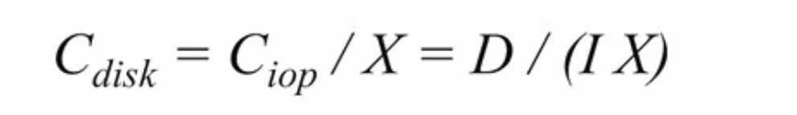
1MB of RAM costs M dollars and holds P pages, then cost of keeping it in DRAM is:
The page is worth caching when
Compare between SSD and hard disk
C_mem < C_disk, if X < 5mins (now 4h). For data that access frequently, store in DRAM/memory
disk latency has been approved
Combining Storage Devices/RAID:
increases performance and reliability
Different RAID levels: (Stratigy of using multiple disks)
RAID 0 / Striping: for performance. Read from two disks, write to 2 disks
RAID 1 / Mirroring: for reliability (twice perforamce for read)
read a file A from two disks, and write to both disks
RAID 1 / Mirroring Across: helps with reads (get A1A2 from Disk1 and get A3 A4 from Disk2), does not helps with writing
RAID 5 / Stripping+ 1 parity disk: Ap = A1 ^ A2 ^ A3 (bit wise XOR of all the part)
Can afford loss one disk, recover using Ap
1 parity for fault discovery
Paralell when read, 4 disks = use 4 disk for read bandwidth
Handling Storage Failures
Detection: checksum;
Correction: need replicating data
In all cases, data layout and access pattern matter because random ≪ sequential access
Lec4 Data Storage Formats
Data items -> records -> blocks -> files
Record encoding
Three concerns of designing Storage Formats:
Access time
Space
easy to update
general Setup:
record collection + index (index on primary key, the data is ordered by primarity key) + second index
What are the data items we want to store
bytes (8 bits): map different data types to bytes
Fixed length: integer: fixed # of bits; Floating points: n-bit mantissa, m-bit exponent; character
Variable length: string, bag of bits
representing Nothing: NULL(Not same as 0 or "")
sepcical sentinel value in fix-length
Boolean is NULL flag
Just skip the field in a sparse record format
Which data type have value to represent NULL?
String/Character?
Floating Point? NOT A NUMBER (a special combination of bits, pick up one)
Record Encoding
independent choice of f
Fixed vs variable format
Fixed vs variable length
Fixed Format
a schema for all records in table specifies:
- # of fields
- type of each field
- order in record
- meaning of each field
Variable Format: eg, Json data, protocal buffer
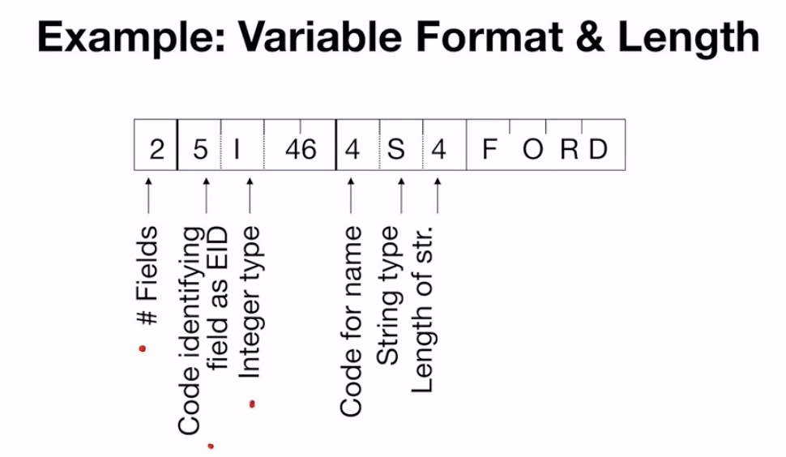
Variable format useful for sparse records, repeating fields, evolving formats
But may waste space (a lot of staff before acture data)
Variants Between Fixed and Variable Format
eg, Include a record type in record
Collection Storage
Record => blocks => files
Efficiency question:
locality: read near items
searchability: quickly find relevant records; how many IO it takes to find a item
Locality:
Read different field of same records
Read same field: Read field1 of record1 and read field1 of record2
column store is 3x less IO: because for row store, almost read the whole table and get age field.
row store & column store
Accessing all fields of one record: 1 random I/O for row, 3 for column
Accessing one field of all records: 3x less I/O for column store
If data is on disk: For row store, read the whole table
If data is on memory: For row store, bring a whole cache line to CPU L1cache, basically reading the whole table
Hybrids store between Row and Column
column groups: might be accessed together/co-accessed
row columns: group a couple of rows together and store them by column
depends on storing on memory or disk??? Consider the block size of disk, and cache line size.
for disk, you need to wait for the disk to spin and skip the data in between. (wait time depends on how many data in between)
Searchability: Ordering, Paritions
Ordering the data:
closer I/O if queries tend to read data with nearby values of the field
Add Index to increase serchability
cons: need to maintain ordering when insertion/add data, slow when modify/insertion
Partitions:
Place data into buckets based on a field, but not necessarily fine-grained order (could just append at the end of buckets)
Have searchability on Multiple fields at once:
Method1: Multiple partition or sort keys, composite keys
eg, partition using (date, user_id).
downside: if the first level of partition/sorting result in small buckets, hard to search on second level, because have a lot of buckets need to search
Method2: Interleaved orderings such as Z-ordering, eg (date, user_id)
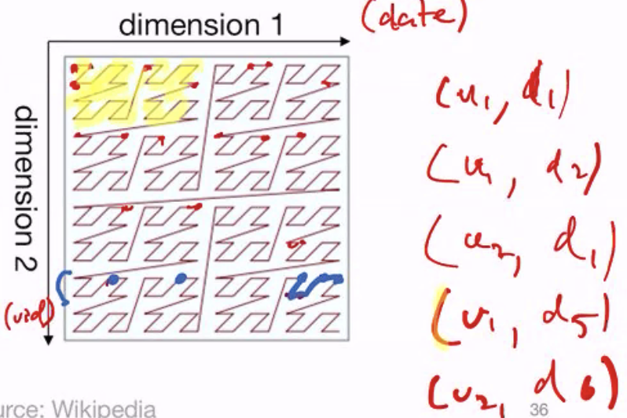
split into 4 and create a z
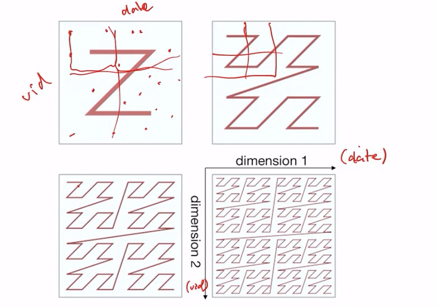
the data points of (date, uid) is on the corner of "Z"
store the data points follow the zigzag line
good partial locality on both dimensions: eg, the green lines shows the locality of 'date' dimotion 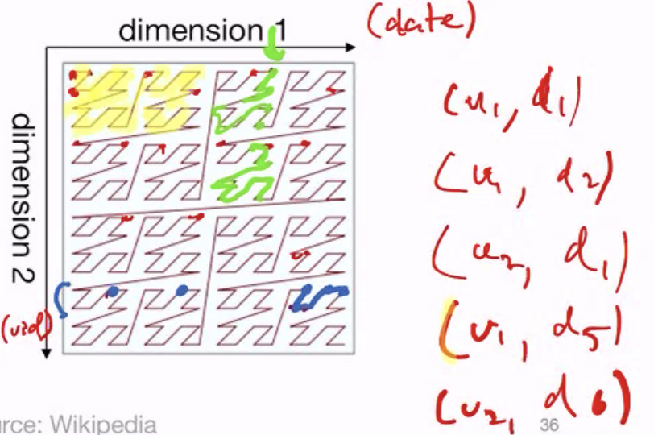
Z ordering - bit interleaving:
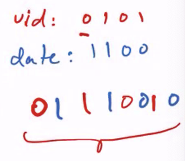
take the generated 8 bits and sort by this 8 bits value, basically like Z-ordering
Other methods, Multiple demsional clustering
How to store records in blocks and files?
records are in different size,
separating records: tell where is the begin and where is the end
Fixed size: easy to skip to the start of a record, might waist spaces
special marks:
give record length (within each record, or in block header )
Spanned vs unspanned
unspanned:
cons: may waste space
pros: easy to find the start of every record
when insert new records, need to manage all the small blank spaces
when deleteing records, have a lot small empty spaces, which can not fit large records.
spanned: allow the block to go across different blocks
cons: fragmenentation for spanned; need more IO to read a record (if the record on two different block)
pros: not wasting space
If the record is really large, larger than a block, MySQL will keep the long record in other places
Indirection: how to refer to other records:
Fully Physical references: record Address ID = (device ID, cylinder ID, )
Fully Indirect references:
Record ID is assigned, a unique ID without any special meaning
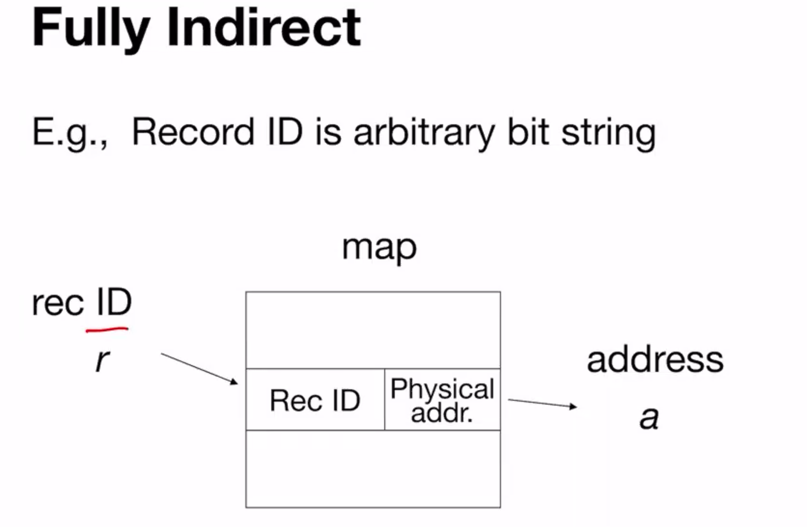
Tradeoff:
Flexibility <=> cost
Indirect: 2 IO for look up a record; but more flexible (move data records only need to change the physical addr in the map)
Inserting Records:
Easy case: records not ordered, just put and the end of file or in a free space
If records are variable-length, harder
like malloc() and free() in OS class, how to manage free space to be efficient (find a space given size)
Harder case: records are ordered
If free space close by, not too bad
Otherwise, use an overflow area and reorganize the file periodically
Deleting Records:
Immediately reclaim space
OR, Mark deleted And keep track of freed spaces for later use
Compressing Collections:
Usually for a block at a time
Column store is more easy to compress, more compressible
Item in the column is very similar, have similar items together
Can be integrated with execution (C-Store)
Lec5 Storage Foramt C-Store paper
C-Store Paper
Co-designing comput and storage
C-store stire data in Projections:
subset of columns, might sort in different order
Join indexes to find join multiple columns
C-Store Compression
NULL Compression: compress leading 0 in Integers, nothing to do with SQL NULL
Dictionary encoding:
Keys could be a combination of columns
this was done in bulk
eg, 4 column, each might have value 0, 1, 2, 3. Store 4 columns together as key: 0000, 0133
commen things should be encoded with fewer bytes
Bit-vector encoding
eg, 0=001, 1 = 100, 2= 010
useful when lookup a specific value
Lempel-Ziv
Experiments:
100 million 4-byte integers
Sorted runs: # of sorted values that apear one after the other, consecutive number that are ordered
projections are sorted by several columns/multiple keys, so it have several "sorted run" rather than a giant sorted run.
Sorted run pattern appears a lot
Column size:
RLE Compression in sorted runs of length 50
for every value in the run, store a integer of how many times it appears
If 25 distinct value, average every number appear 2 time
Bit compression corss No-compression at 32 distinct values: integer is 32 bit
Time:
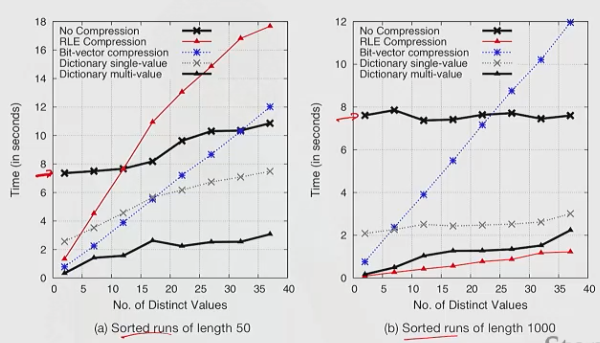
No compression: time increases for query like "COUNT(*) GROUP BY", why?
keep a hash count, for each value =>count. Use for loop to check every record in the column store, then count++;
Branch, If you have multiple possible values, the CPU might have a lot of branches, and it will guess one and suppose the value matchs
For small distinct values and long sorted runs, same value appears a lot of times
Could also because of memory system: already load a value into register, if next value is same, directly++?
How would the result change on SSD?
IO will be come very fast, If some compression method is IO-bound, it will become faster
Dictionary Compression might become worse, because it needs to lookup dictionary in memory and count; other thing like bit-vector and RLE might become faster, because do not need to lookup and know the value ???
if the read speed of disk reaches maximum of the disk (bits/s), it IO-bound process
Index
Find a specific key or range query or nearest data point
trade-offs: index size, query performance, cost to update indexes
adapt data structure to work well on disk (care about IOs)
Conventional indexes / Tree-based
dense index
have index on every single key, and point to each record
When a record in file is really long, use index to search
index pages have 4 items, Data pages
Index pages can contain more information, and can be cached in memory
Sparse index
skip some keys, pointing to the begining of each data page
the table need to be sorted sequential
2-level sparse index, like a search tree
File and 2nd level index blocks need NOT be contiuous on disk, might be in linked list
easy to modify and insert
1st level index need to be continuous or linked list
Sparse vs Dense
Sparse: Less space usage, can keep more of index in memory
Dense: Can tell whether a key is present without accessing file
(Later: sparse better for insertions, dense needed for secondary indexes)
Terms:
Search key of an index: can be multiple fileds
Primary index: inde on primary key (the file is sorted by the key)
Secondary index: index on anything else that the file is not sorted by
dense index: contain all the values
Handling duplicate keys:
For a primary index, can point to 1st instance of each item (assuming blocks are linked)
For a secondary index, need to point to a list of records since they can be anywhere
Hard to insert and delete
deletion: Sparse Index
need to shift the data, make the blank space at the end of block
can leave a blank space in index page or file page
Dense index need more work: always need to update pointer.
Insertion: sparse index
Need to move things around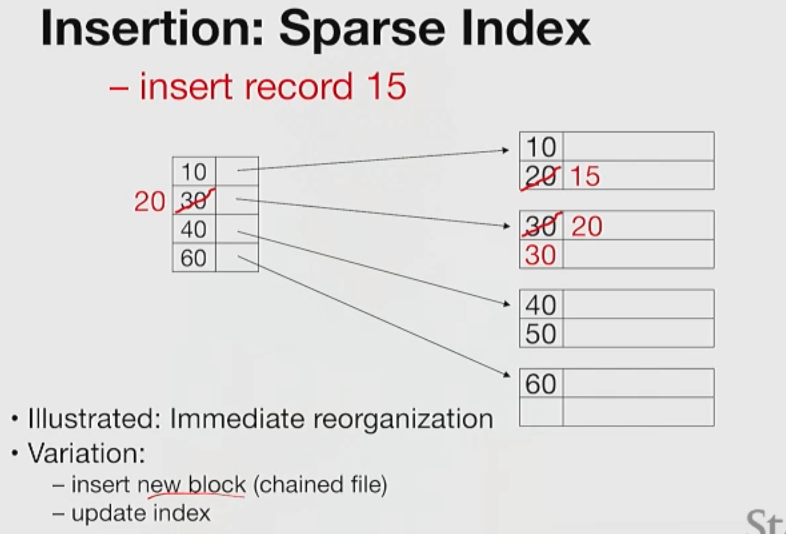
Another strategy: use overflow blocks 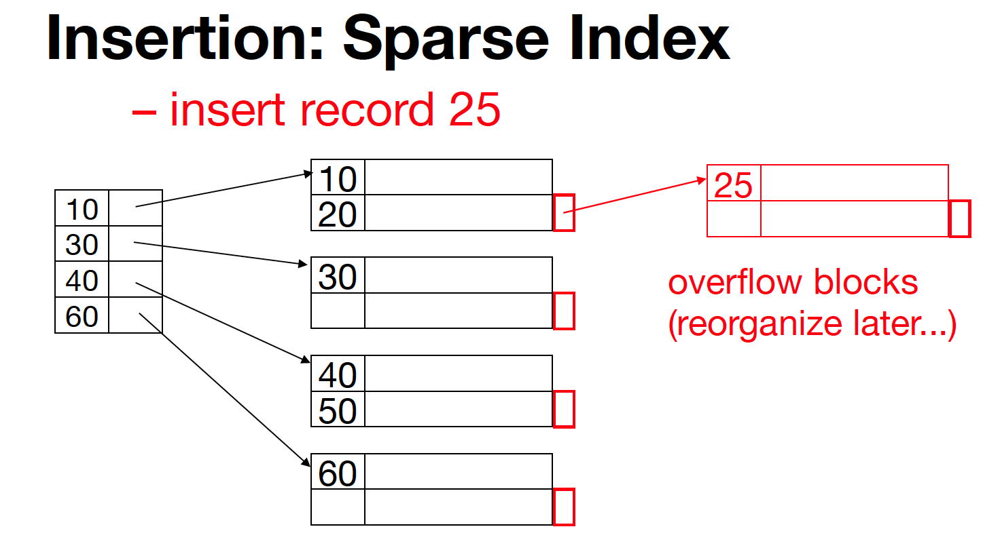
Secondary indexes:
sparse index does not work
spase higher level (1st) + dense index (2rd)
search key of an index: can be multiple fields
Handling Duplicate keys
for the secondary index, need to point to a list
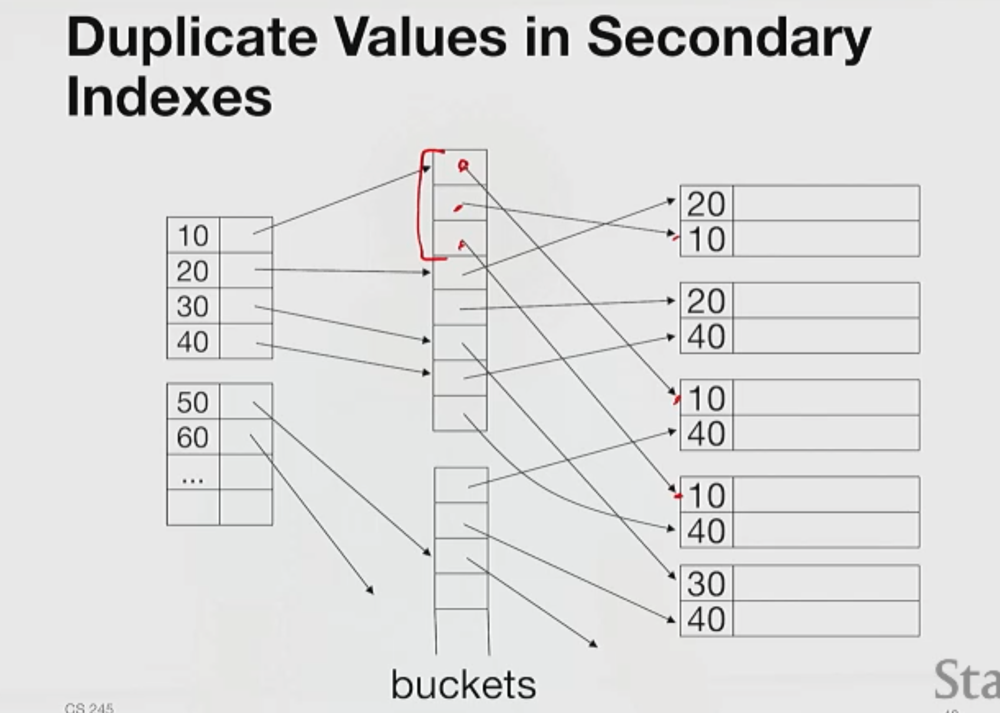
bucket advantages: Can compute complex queries through Boolean operations on record pointer lists
First get the buckets according to the dept. index and Floor index, intersect them.
B-trees
top level = 1 page
degree of the tree n=3: max number of value in each node
B Tree rules:
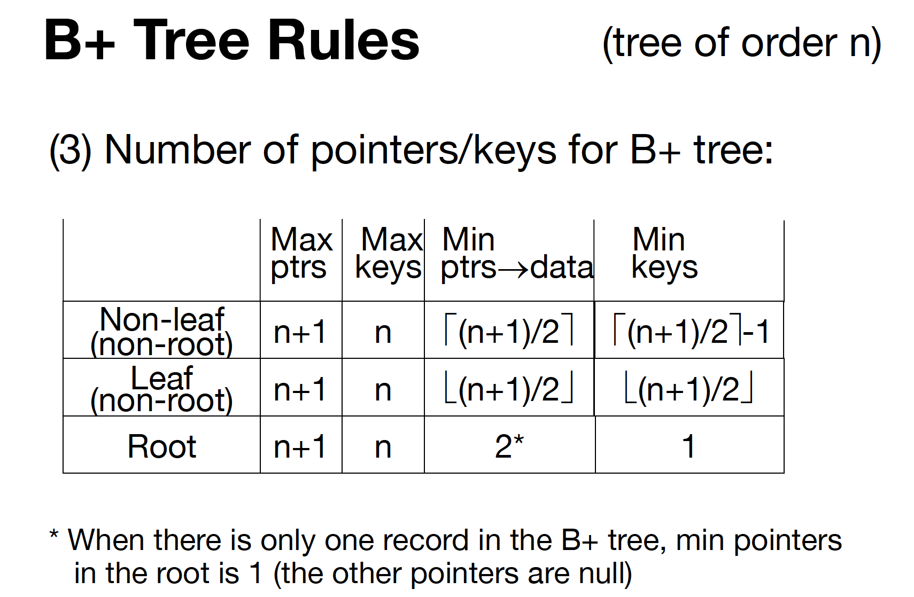half full to toally full
Insert key
make leaf node half full to toally full
when insert, split a leaf node and create another one
leaf overflow, non-leaf overflow, add new root (the root)
add from lower level, recursively insert upper layer.
Deletion from B+ tree
Simple case: no example
Coalesce with neighbor (sibling)
Re-distribute keys
Cases (b) or (c) at non-leaf
What is optimal n?
a index page could be 1 or more storage blocks
Hash indexes
Multi-key indexing
Lec6 Query Execution
Hash table
keep 50% - 80% full
Extendible hashing
first use i bits of the h(K) to map it to buckets
points to a directory then points to buckets
Don't need to shuffle everything
i=2, means the first 2 bit are used as key
increasely add more detail
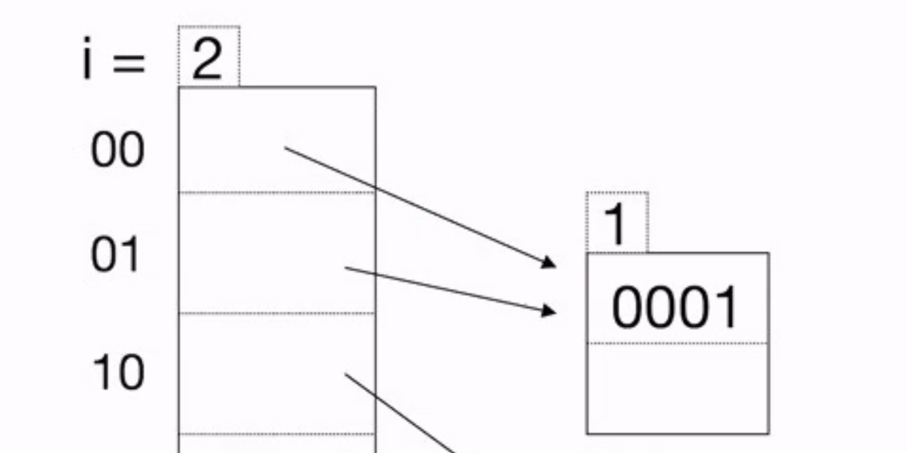
the first two pointers points to same places, because now there are not so much items begin with 0
if we insert 0111 and 0000, change i=1 to i=2 (change the local depth)
do not need to move a lot of data around, disk friendly hash table
For IO, need 2 IO to find the data (Not much better than tree)
Will need chaining if values of h(K) repeat and fill a bucket
Multiple key
Strategies: 3 kinds
k-dimensional trees / k-d trees
split on one dimensional, make the division as even as possible
use second dimension to split big buckets
Efficient range query in both dimensions
How to only search for y, eg, search for x=15 and y > 30?
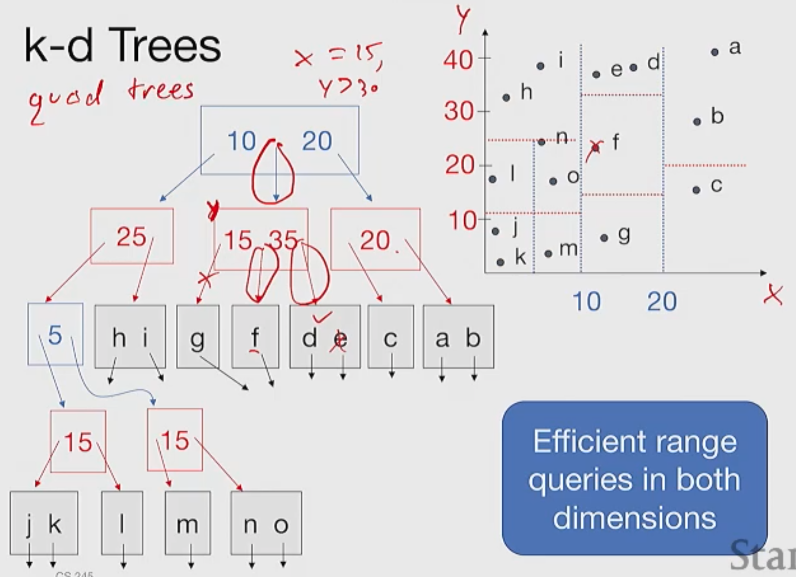
How to only search for y?
Always used in graphical data
Some database examples: Mysql, Apache
Storage system examples:
MySQL:
Apache Parquet + Hive:
Query Execution
logical query plan: relational algebra
Physical query plan: real data structures and algorithm
Plan optimization Methods:
Rule-based:
Cost-based:
Adaptive: update execution plan at runtime
Execution Methods:
Interpretation:walk through query plan operators for each record
Vecotrization: walk through in batches
Compilation: generate code
Reltional operators
bag of tuples: unordered but each tuple may repeat
set of tuples: unordered and each tuple can NOT repeat
set union: make distinct, more expensive
bag union (UNION ALL): keep everything duplicated
Operators:
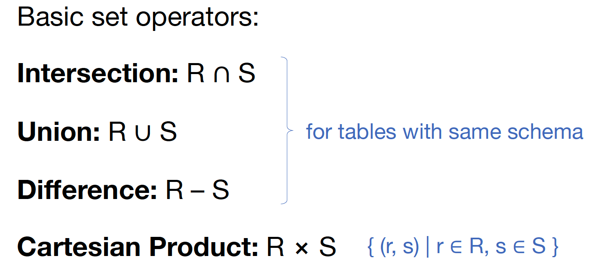
View Operation: operate on table
selection: select rows
projection: compute a new thing, expression(r)
Aggregation
Properties:
selects: use "SUM" option for bag unions
projection:
only read those columns will be used
Example SQL query:
IN is a cross product + selection!
One physical plan:
build index on one table and sequencially scan another table
Which table to hash?
hash the small table, small table can live in CPU cache
hash table should not in disk
building hash is linear time, sequential scan also have linear time
Execution methods
Interpretation:
For Select, it will continue call parent.next(), and check whether the condition satisfies
pros and cons
pros: it's simple
cons: speed.next() need to call compute(), compute() can be any computation, so compiler will made it to a branch, slow down CPU
vectorization: an Operators and Expressions works on a batch of values.
tuplebatch: work on rows; valuebatch: a batch of columns
Pros: works great for analysictial database
Cons: data goes between CPU and L1 Cache often.
Typical implementation:
values store in columnar arrays, with a seperate bit array to mark nulls
tuple batches fit in L1 or L2 cache
Operators use SIMD instructions to update both values and null fields without branching.
V(U, A) = 1, V(U, B) = V(R1, B) or min(V(R1, B), T(U))
Lec8 Query Optimization2
Another Type of Data Stats: Histograms
Cost models
Number of disk IOs
Index search:
If result are clustered, the cost of index search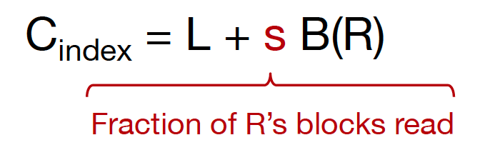
L + : means first reach a leaf node, then use linked list of the leaf node
eg, p is " >=100, and "
If s is high, gonna read all the blocks anyway, so should not use index
If s is low, index will save some time to read some blocks not contain the target
For clustered, use index is always better no matter s is low or high
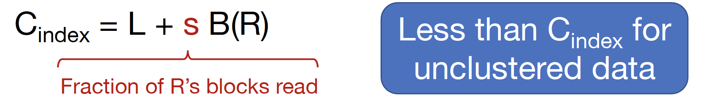
Cost Metrics: Disk IO, one IO for one block
selectivity s
Example: the plan generate less data
product.type & customer.country: do the selective one first
Common join methods:
Iteration Join: if R1 only have fewer tuples, it's good
could load M blocks in RAM at a time
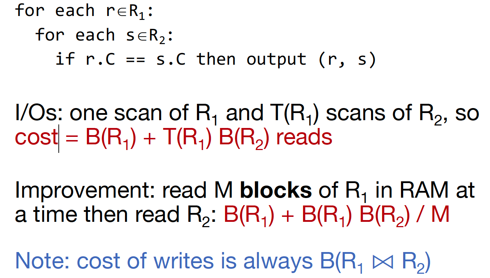
cost of write means the cost of output
Merge Join:
outputTuple: could have several matchs
cost: 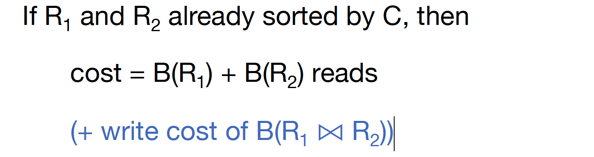
If Ri is not sorted, can sort it in 4 B(Ri) IOs: split table into chunks fit into memory, and sort in memory (1 Pass data in and 1 Pass data out). Then merge then (2IO in + out).
if memomry >= (N is number of tuples?)
Join with index:
R1 join R2 on C
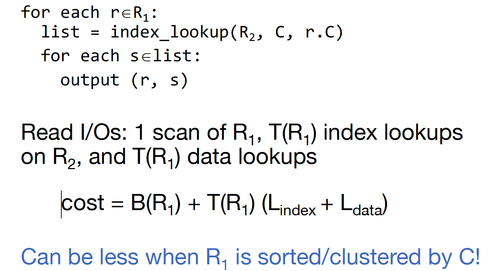
can be less IO if R1 sorted / clustered by C
Hash join: suppose hash table fits in memory
read IOs: B(R1) + B(R2)
Can be done by hashing both tables to a common set of buckets on disk
Hash join on disk: (the table is too big, can not fit in disk)
create files on disk with different range of hash keys
load each bucket and compare to merge
Hash cost: 4(B(R1) + B(R2)):
Trick: hash only (key, pointer to record) pairs
before dereferencing pointer, sort pointers to get
Summary
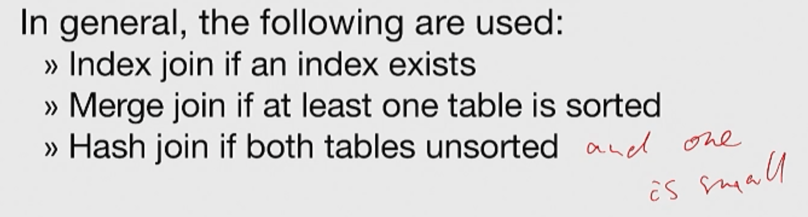
use hash join only when one of the table is small (both big table, use merge join)
Cost-based plan selection
How to generate plans:
pick left-deep joins : left-deep join pros:
If R is small and use hash join, the intermidate result can always stored in memory, do not need to write out to disk.
Left-deep join can save IO: do not need to save intermediate table to a file. If left join use same kind of join (hash join, merge join)
could have n! plans using left-deep
searching througth the most impactful decisions first
How to prune plans:
Memoization and Dynamic programming:
mnay subplans will appear repeatedly
cache sub-tree of the query plan, save the cost estimation and statistics
Spark SQL
Original Spark API: RDD
RDDs: data is inmutable (can recovery from failure) , create a new one based on previous one
Cons:
functions pass in are arbitrary code: hard for engine to make optimization(don't know whether the function is commutive, associate)
Data stored is arbitrary object: can not do optimization using storage format (don't know the data is adjacent; do not have knowledge on storage)
DataFrame API: schema and offer relational operations
DSL: domain specific language
DataFrames for integrating relational ops in Scala/Java/Python programs
What dataframed enable:
Compact binary representation
Optimization across operators (join reordering, predicate pushdown, etc)
Runtime code generation
Based on data frame concept in R, Pandas
Spark is the first to make this declarative
Integrated with the rest of Spark
ML library takes DataFrames as input/output
Easily convert RDDs ↔︎ DataFrames
Efficient library for working with structured data
2 interfaces: SQL for data analysts and external apps,
DataFrames for complex programs
Data sources:
spark is a computer engine, do not know how to store data
support different format data source
Lec9 Tanscations and Failure Recovery1
Spark SQL Wrap-up
can migrate from different data source
Defining Correctness
Integrity or Consistency Constraints
Constrains are boolean constrains
Consistent state: satisfies all constraints
Transcation constrains: can be emulated by simple boolean constraints
Observation: DB can’t always be consistent!
So need transcation: Collection of Actions taht preserver Consistency
Correctness: database is left consistent
Transcation model
Both clients and system can abort transcations
Why system abort? eg, system crash, state in memroy lost; eg, concurrency control
How constrains can be violated?
transcation bug: read something and find that does not apply
DBMS bug (not consider here)
Hardward failure
Data sharing: 2 transactions can not see each other's intermediate result
Hardware failures
Failure models
desired events
Undesired Expected Events
Models:
operations: Input(x), output(x), read(x, t) and write(x, t)
write the old value to log; New value is in memory.
When call output(A), first write a log entry <T1, A , old_vale>
When commit, first write an entry <T1, commit>
One complication: Keep log in memory
Writing log (in disk) need a lot of IO. Need to keep log in memory and then write to disk.
Bad state #1: If we update reocrd A in disk before we write log to disk. After change disk record A from 8 to 16, memory crash. We do not know the old value.
Bad state #2: Write the whole log out to disk, after disk A change from 8 to 16, but before disk B change from 8 to 16. If crash here, we will think T1 has already commit, and do not need to modify A's value. However, the state on disk is not consistent.
Before commit, have to update all the data pages.
Rules for undo logging
For every action, generate undo log record (containing old value)
Before X is modified on disk, log records pertaining to X must be on disk (“write ahead logging”: WAL)
Before commit record is flushed to log, all writes of transaction must be on disk
Recovery Rules: Undo logging
Let S = set of transactions with <Ti, start> in log, but no <Ti, commit> or <Ti, abort> in log
For each <Ti, X, v> in log, in reverse order (latest to earliest), do
if Ti S then
write (X, v) + output (X)
For each Ti S do
write <Ti, abort> to log
Why can NOT read log from earliest to last?
multiple write to same record, need to end up with the oldest value
eg: <T1, x, 8> <T2, x, 12> <T3, x, 5> <abort, T1>
undo logging is the old value.
expected x value is 8.
after recovery (add abort record), need to be <T1, x, 8> , <T2, x, 12> <T3, x, 5> <abort, T3> <abort, T2> <abort, T1>
eg: write <Ti, abort> in step 3 should from latest to earliest.
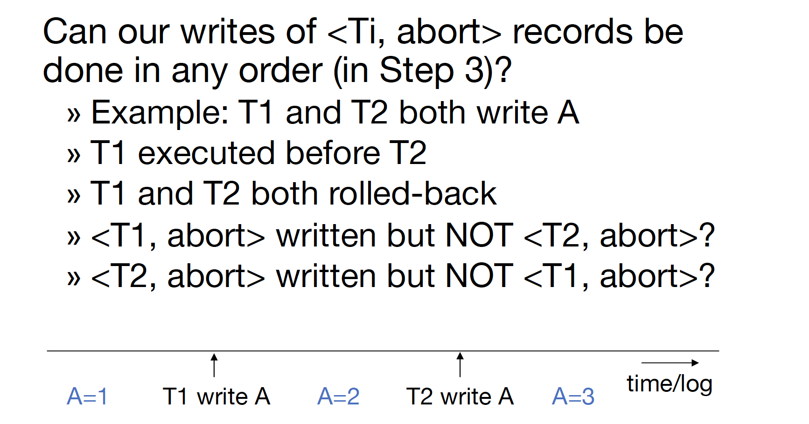
Undo is idempotent.
crash several times
Any downside of undo logging?
A lot of IO in "Before commit record is flushed to log, all writes of transaction must be on disk"
random IO
might have a lot of redundant information in logging, if we modify a same record for several times
Hard to replicate the database across the network
mush push all changes across the network. Need to write twice the data (logging + data)
Redo logging
YOLO style: if we have all the loggins on disk or especially <T1, commit> log write to disk, we have all the information need to. If not, we have nothing.
End, everything is on disk
Rules:
For every action, generate redo log record(containing new value)
Before X is modified on disk (in DB), all log records for transaction that modified X (including commit) must be on disk
Flush log at commit (keep all the values in memory)
Write END record after DB updates are flushed to disk
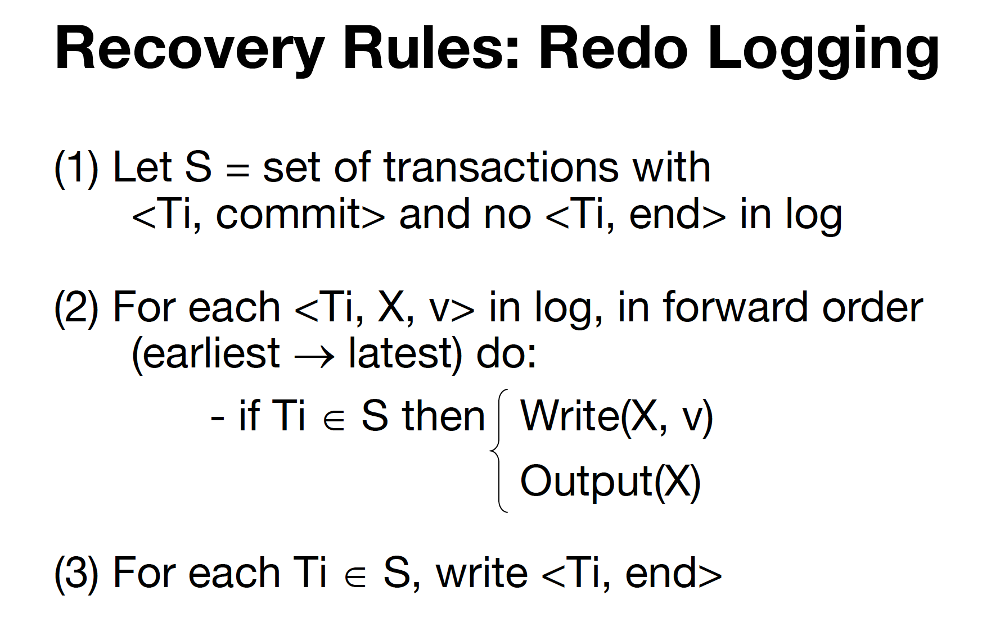
Lec10 Guest Lecture1
Abstractions for Machine Learning Compilations - Chen Tianqi
##Lec11 Tanscations and Failure Recovery2
Redo logging
combinning <T1, end> records - optimize normal operation => checkpoints
a lot of transcations update a same record X
write a combined < end> record.
checkpoints
What to do at recovery
find last checkpoint, do not need to read the privious logging
REDO all the commit record
for un-commited record, ignore it. It does not write the checkpoint/data page to disk, so we do not need to do anything
Need to temporarily stop transactions, stop everything
Redo logging need to keep all modified blocks in memory
Undo/Redo logging: Undo + Rdoe
Write more information: update = <Ti, X, new X, old X>
object can be flushed before or after Ti commits.
log record must be flushed before corresponding data (WAL)
Flush log up to commitrecord at Ti commit
Example:
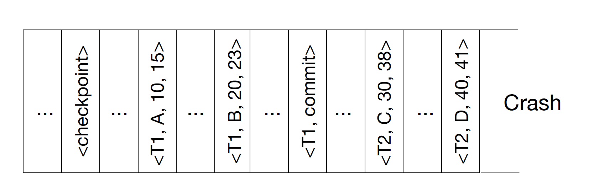
The A, B might on disk or not
REDO T1 (T1 committed), set A to 10, set B to 20
T2 un-committed: wirte out all the old values. UNDO all its update.
set C = 38, set D = 40 (in memory or disk ????)
Non-quiescent checkpoints:
do not need to stop everything
Wirte start-ckpt, end-copt
Start-ckpt + active TXNs: when recovery, need to know where to go before the checkpoint. recovery these active txns
Algo: write every drity page to disk, and then write a
Examples 1:
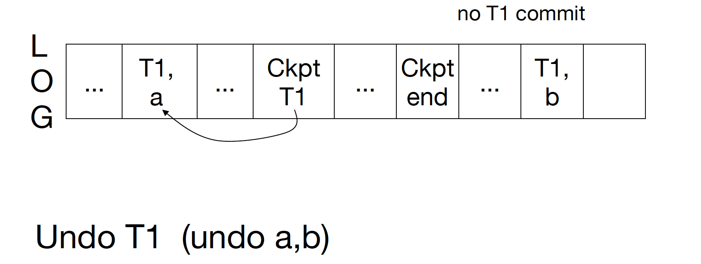
start from latest logging (b) to (a), it is
Example 2: commited REDO b and c,
A must be flush to disk
b and c might flush to disk, or might not
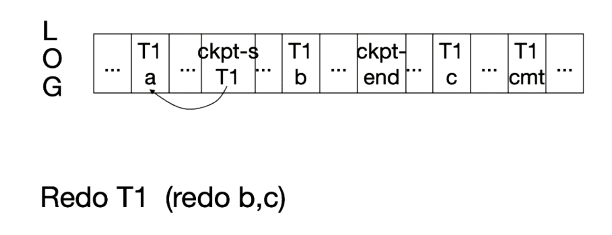
Example 3: Never finished
UNDO (if not committed) <T1,b> <T1, c> since the flush to disk can happen before
REDO (if committed) <T1,b> <T1, c>
If there is a commit between ckpt-start and ckpt-end, we only know the page before checkpoint-start will be flush to disk
Algo: undo-un-commited; redo-commited
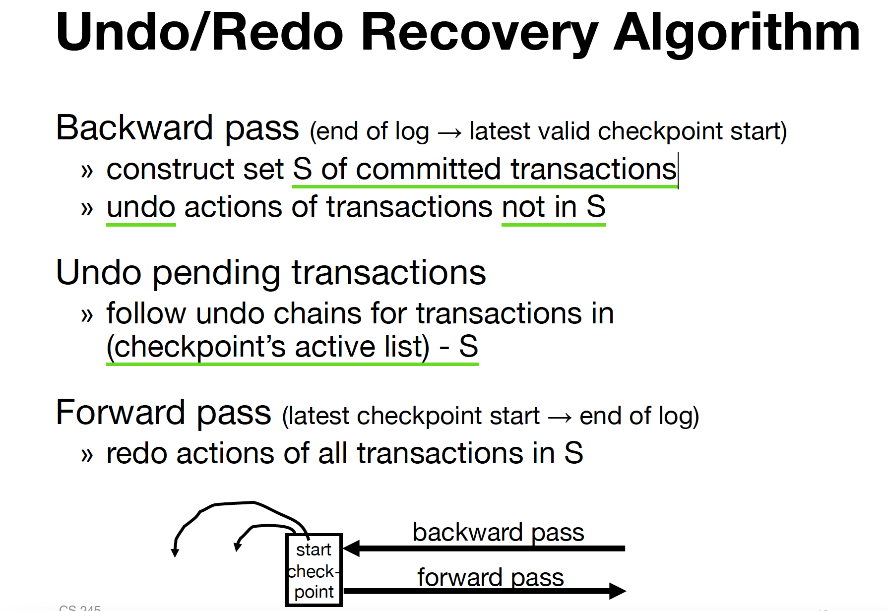
valid checkpoint: have both start and end
External Actions
can not undo a transfer money action
Execute real-world actions after commit
Try to make idempotent
Give each action a unique ID
How Would You Handle These Other External Actions?
Charge a customer's credit card: add a TXNid, if VISA find a repeated TXNid, ignore it.
Cancel hotel room: can repeatly do it, idempotent
Send data into a streaming system: put some unique id in each record, consumer will ignore the repeated one
Media Failure(disk failure)
Redundante Storage
Output(X) → three outputs
Input(X) → three inputs + vote
Another way: log-Based Backup
Backup database
Create backup database: Need to write DB dump
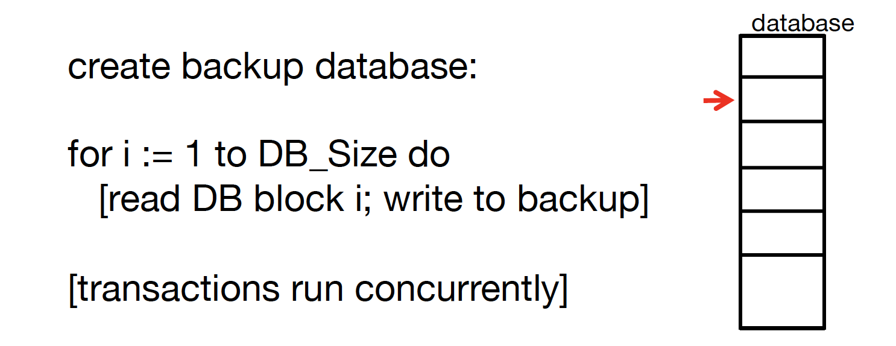
When Can logs Be Discarded? Before the last needed undo before DB dump
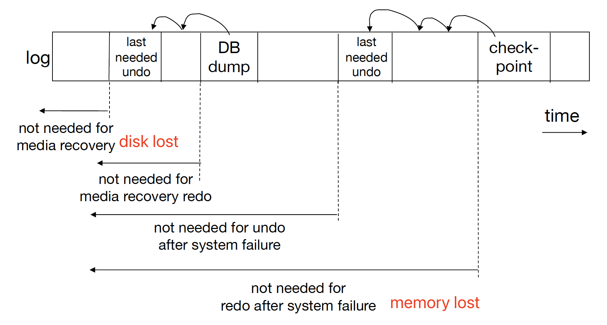
Lec12 Concurrency
Different transcations need to access same item at same time - might violate constrain
Define isolation levels: (defined by anomalies)
Serializability: result is same as some serial schedule (strongest)
Read uncommitted
Read committed
Repeated Read
Serialzable
Anomolies:
Dirty Reads
Unrepeatable Reads,
Phantom Reads
What makes a schedule serializable?
only look at order of read & write
Do not have assumption on the transcations
Is a schedule serializable?
swap things and try to see
Another way to do:
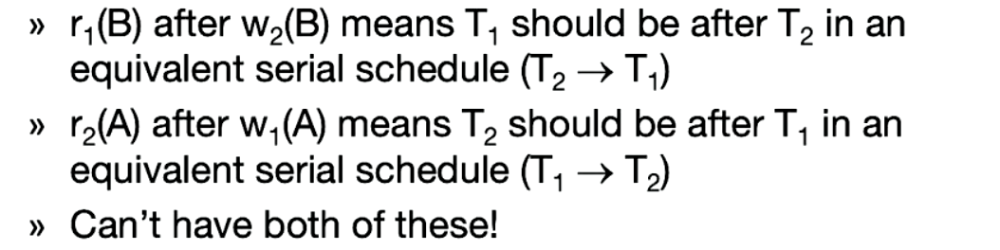
read1(B) after write2(B): T2-> T1
dependency graph
Conflict serializability
conflicting actions: from different transcations
Write takes a lot of time => but assumption: serialize
Conflict equivalent:
only change the order from different transcations
Conflict serializable: Conflict serializable means there exists at least one serial execution with same effects
Precedence graphs
check whether a schedule is conflict seriablizable
Edges:
Conflicts: W1R2/ R1W2 /W1W2 => need an edge from 1->2
S1, S2 is conflict equivalent => P(S_1) = P(S_2)
P(S1) is acyclic, <=> S1 conflict serializable
topo ordering
Enforce serializability via 2-phase locking
Shared and exclusive locking
Well-Formed Transcations:
transcation need to lock the item before (read or write)
L1(A):
U1(A): the transcation is locked
S1 is not legal, L2(B) is not well-formed
Rules:
Rule1: Well-Formed Transactions: lock and unlock
Rule2: Legal Scheduler: only one can lock
Rule3: 2-Phase Locking: growing + Shrinking
only unlock when commit
if T1 knows it will not use lock of A anymore, could unlock A here: (if the transcation manager is smart enough)
Get all the locks, before release on of the lock
still 2-phase locking
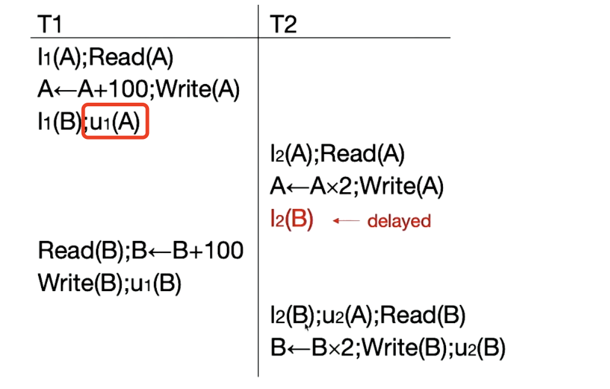image-20220313214211984
Dead lock:
Detect and roll back
Agree on an order to lock items: if need to get Lock A and lock B, need to get lock A first.
Conflict Rules for lock ops:
conflict: <Li (A), Lj(A)> , <Li(A), Uj(A)>
no conflict:<ui(A), uj(A)>, <li(A), rj(A)>
Shrink(Ti) = SH(Ti)
Ti -> Tj means that shrink T_i happens before shrink T_j
Use locking to make sure others say the changes after you totally finish that
Conflict Serializable:
2PL is a subset of conflict serializable
Some example si conflict serializable, but not 2PL
Lec13 Concurrency2
2PL
how to implement 2PL
don't ask user/transcations to request/release locks
Hold all locks until a transcation commits
Shared Locks
Shared mode lock, any number of transcations can read it, but can not write it
S: share ; X: exclusive
Rule1: Well-formed TXNs:
option1: always use X lock
option2: get low level lock first, update to X on write
Rule2: Legal Scheduler:
for S mode: no one else can have a X lock, but could have S
for X mode: no S and no X
Rule3: 2PL:
allow upgrades from S to X only in growing phase
Other kind of locks:
increment locks:
Atomic add: IN_i(A) = {read(A); A <- A+ k; write()}
Increment locks: compatibility Matrix, commutable
image-20220313231213191
Update locks
X and S mode can easy to cause deadlocks
A common case for dead lock:
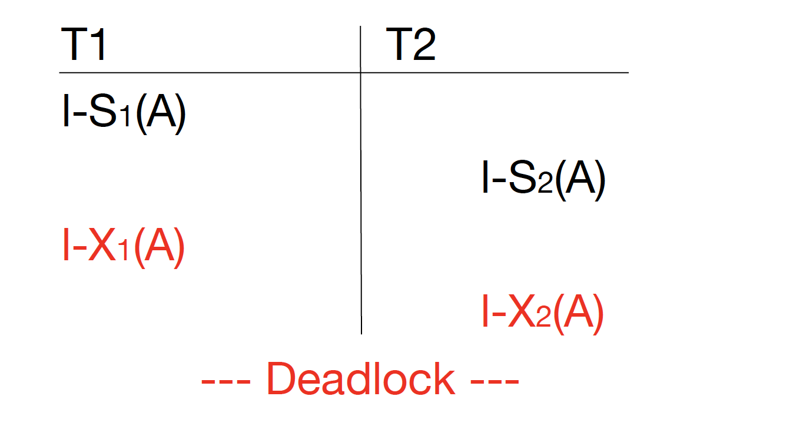
Update mode lock: lock on {read(A), write(A)}
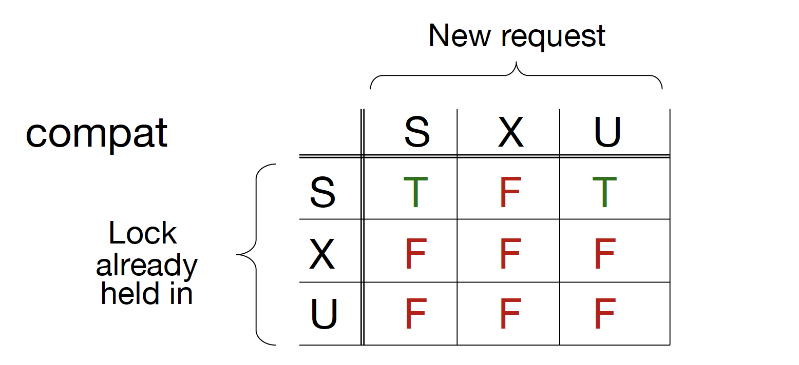
Asymmetric table!
Since we want to update, so we donot want other to read it (can not request a new shared lock)
Which objects do we lock?
Can do it in different level at same time
T1(IS) means TXN1 might need part or all of the data in the table
eg, T1(S) might
T2(S) means T2 want to read whole table
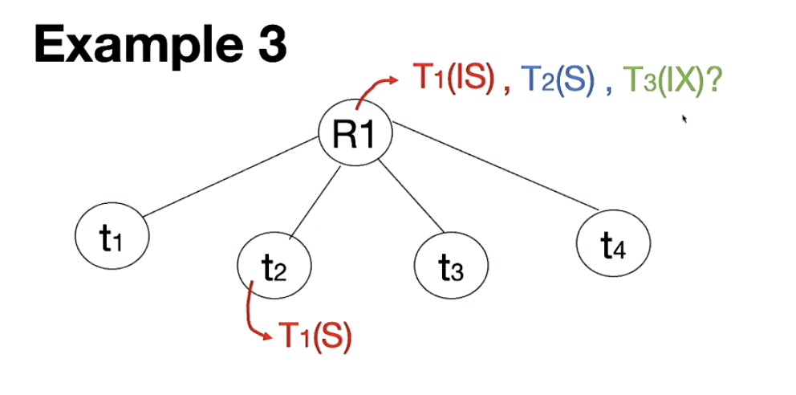
should NOT allow this, we do not know the
multiple granularity locks
IS: intend to share, and will use S lock the lower level child (T1(S))
IX: intend to update, and will use X lock at lower level child
SIX: want to read anywhere in the table, but only update few records
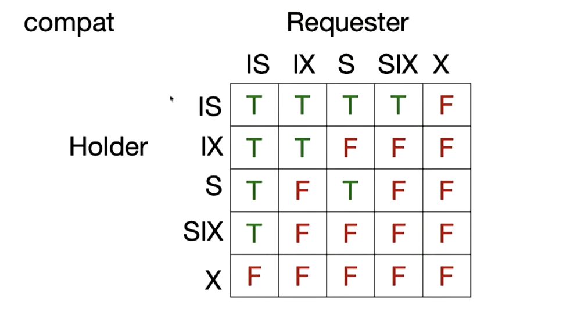
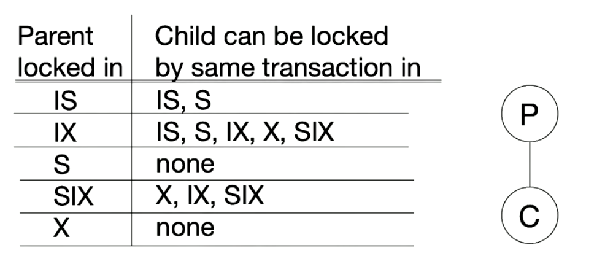
3 levels: Relation - tuples - fields
Exercise1: Yes, T2(IX), T2(IX), T2(X)
Exercise2: Not allowed, need to wait
Exercise3: T2(IX), T2(IX), T2(X)
Exercise4: Yes, T2(IS), T2(IS), T2(S)
Exercise5: Not, T1 could be reading from anything
Insert + Delete operations
problem: phantoms
two TXNs insert new record with same ID
Solution: use multiple granularity tree 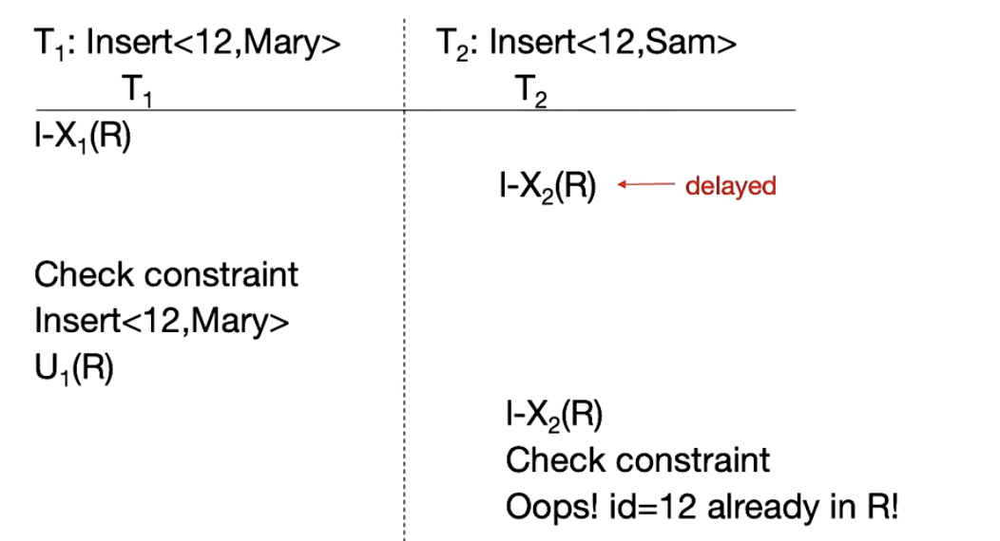
Will not work if the constrain is about multiple tables
Instead lock the whole table R, could locking some range
Optimistic concurrency / validation
validation：
3 Phases:
Read (write to temporary storage)
no locking, very fast
validation (check whether schedule so far is serializable)
all in database, do not need to wait for user input/networking, much faster
write(write to DB)
If the validation order is T1, T2, T3, …, then resulting schedule will be conflict equivalent to Ss = T1, T2, T3, …
Implementing Validation:
FIN: TXNs finish phase3
VAL: finish phase2 and still writing to DB
Example that validation must prevent
RS: read set
WS: write set
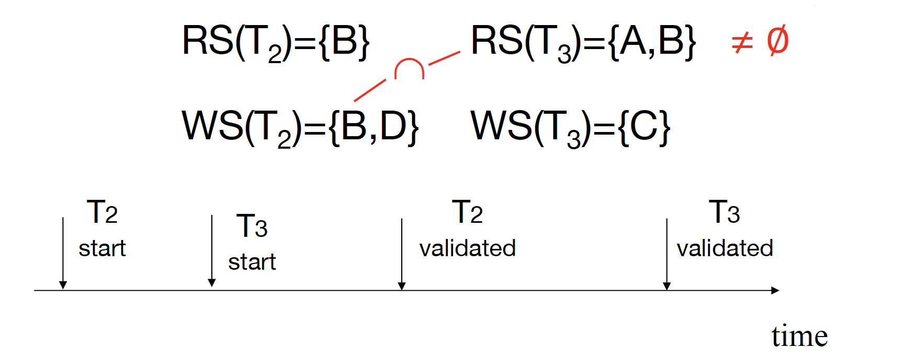
If t3 started, could read A and B but t2 is trying to update B
If t2 finished before T3 start, it will be fine
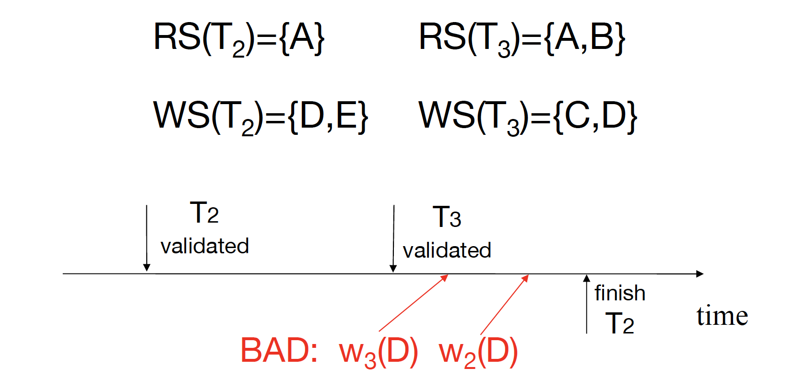
get a old value of D. Between validate, can flush data to disk
T2 finished before T3 validate start, it's OK
Validation Rule:
ignore set: remeber a ignore set, everything finish before it, just remeber what finish before me.
FIN: set of finished TXNs (abort or commit.)
VAL: validation set, a set of TXNs might conflict with Tj (and is writing to disk)
Check:
only have 2 bad cases.
Exercise:
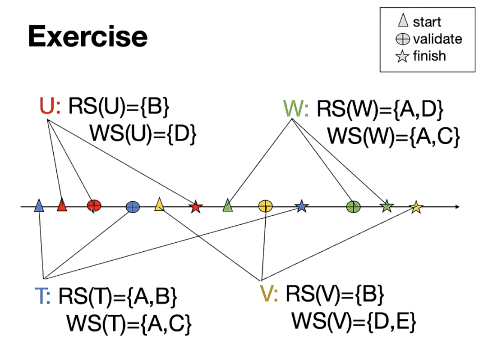
U validate: it can validate. cause no one have write or read something
T validate: Yes.
V validate: Yes. V is reading B, no one else is writing B but hasn't finish. V is wiriting D and E, TXN U might conflict with it but U has already finished.
W: No. It's reading D, but V will write D and has not finished yet.
Is vaidation = 2PL?
Validation is a subset of 2PL
When to use Validation:
Validation perfoms better than locking
Lec14 Concurrency3 and Distributed databases
Concurrency Control & Recovery
Abort:
Non-presistent commit:
can be avoided by recoverable schedules
Example1: do not allow Tj commit before Ti
Cascading rollback:
can be avoided by ASR (avoids-cascading-rollback (ACR))
example
reads from
Tj is the last write to A
ai: transcation Ti aborts
Recoverable
How to archieve recoverable schedule
Strict 2PL: hold write locks (X lock) until commit
For validation, no change, it's recoverable
validation point is the commit point
Definations:
recoverable:if each tx commits only after all txs from which it read have committed
S avoidscascading rollback if each tx may read only values written by committed txs, can writing to record while others are writing
S is strict if each tx may read and write only items previously written by committed txs (≡ strict 2PL)
Examples:
recoverable: T2 read from T1, t2 can only commit after t1
does not avoid cascading rollback
Recoverability & serializability:
every strict schedule is seriablizable
Weaker isolation levels
Dirty reads (weakest): equivalent to having long-duration write locks, but no read locks
Read committed: have long-duration write locks(X) and short-duration read locks(S)
you read a object, then release S lock, others get X lock and write then release, you re-get the S lock and read.
Repeatable reads:
phantoms: if 2 TXNs want to insert record at same time, might violate some constriants, like ID need to be unique
Serializable
Snapshot isolation: always see the snapshot when it starts
MVCC, like git. But git merge some times can not compile
not serializable. Example: txns write different valud
Distributed databases
Why distribute DB
replication: many nodes, fault recovery
partitioning: parallel, complete faster
Replication Strategies:
how to read/write to data on multiple nodes
Method1: primary-backup
send all the request to primary, forward the operation or log to backup
Method2: Quorum Replication
each read and write goes to more than half of nodes, majority
What if we don't have intersection
eventual consistency
asychronously broadcast all writes to all replicas
When is this acceptable
only write once, immutable
update photo to
How many replicas:
support F failures, F+1
3*F + 1
Solution to failure:
Distributed computing: use consensus
Consensus: distributed agreement
Partitioning strategies
partition record into multiple server
Hash key to servers
Partition keys by range
keys stored contiguously
do range query more efficiently
store a table, map from range to server id
Distributed transcations
need cross-partition concurrency control
Atomic commitment
problem: abort
Why one node want to abort but others do not want
another client write to part of the nodes, make it need to abort
one node crash
have deadlock between nodes
Two-Phase Commit: solve the abort problem
each TXNs need a coordinator
before commit, send prepare messge to each participant
everyone prepare: commit: Participant need to reply 2 messages
one partition abort: abort
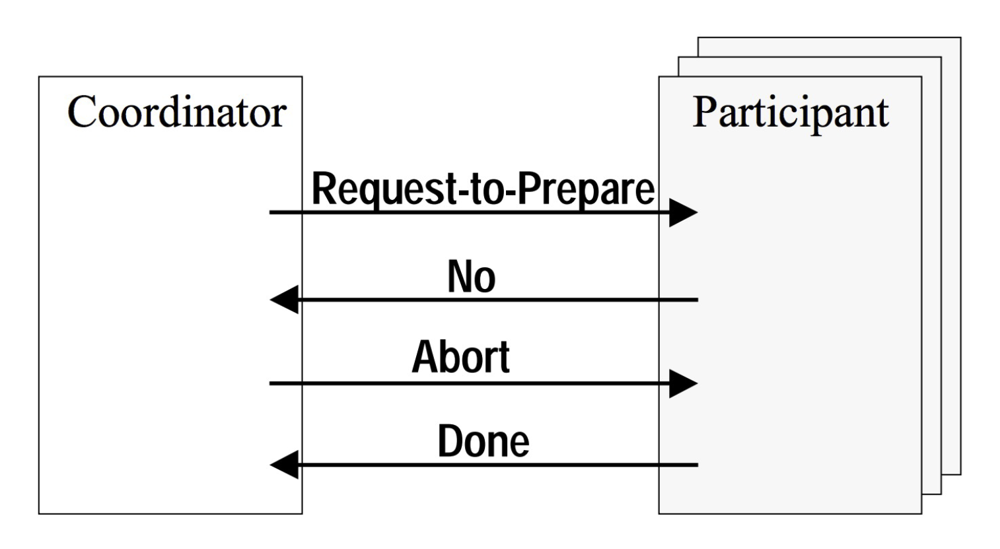
2PC + Validation
need to block between prepare and commit
validation is fast, can get fast response
2PC + 2PL
2PC + logging:
log before reply prepare
log before commit
Lec15 Distributed databases2
Assumption: all the nodes will come back after a crach eventually
two-phase commit (2PC)
What could go wrong:
don't hear back from a server
coordinator unavailable
select a new coordinator
both server and coordinator goes way?
rest of partiction must wait
Coordination is Bad new, every atomic commitment protocol is blocking
CAP Theorem
Assumption: Asynchronous Network Model
message can be arbitrarily delayed
can not distinguish between delayed message and failed nodes
Distributed system can choose CP(Consistency) or AP(Availability)
can not have both
have consistency is expensive
lost availability
need to talk/comminicate between nodes
Multi-Datacneter Transcations:
44 ms apart, maximum 22 conflicting txns per second
Do we have to coordinate
Avoding coordination
BASE = “Basically Available, Soft State, Eventual Consistency”
helpful ideas:
idempotent operations: if the update background program crash, then start, need same result if we do it twice
commutative operations
Example weak consistency model:
Causal consistency
Example: the order of receive message and log is not same.
see the message then reply
receiver can receive message at different time
Parallel execution
read-only / analysis dataset
Amdahl's law
Example: Distributed joins
Algo1: shuffle hash join, Communication cost (N-1)/N (|A|+|B|)
Algo2: broadcast join on B, communication cost: (N-1)|B|
broadcast join is much faster if |B| << |A|
Handling imbalance
Load balance dynamically at runtime
Handling faults and stragglers
fault recovery: (run time)
simple recovery: use checkpoints, runtime grows with N (N nodes)
parallel recovery: redistribute its task to others, runtime T/(1-f), doesn't grow with N
Summary: Parallel = communication cost; load balance; fault recovery
Lec16 Cloud Database systems
SaaS, PaaS, IaaS(Infra)
S3 & Dynamo: key-value stores
Consistency: eventual consistency
can only operate on one key
consistency: evental consistency, read-your-own-writes for new PUT
negtive caching for not found
read-after-write: for one client
Dynamo implementation (object stores)
commodity nodes, form a ring to split up the key among them
each node chose multiple position on the ring
3 nodes, write to 2, read from 2: strong consistency
Aurora: transcational database managed by cloud vender
only replicate redo log, compute the pages in the server
BigQuery: analytical DBMS
separate compute and storage
elastic, faster
challenges: UDF, scheduling, indexing
Delta Lake: ACID over object store
build as a client libarary
Just store objects on S3
hard to insert multiple objects at once
poor peformance
implement a transaction log for each transction
periodical checkpoints
put data statistics in the check_point
Lec17 Guest Lecture2
Lec18 Streaming Systems
compute queries on streaming data continuously (efficiently update result)
Example Query2 problem:
user have some plan then change plan
need the user plan status when they visit the page
Streaming Query Semantics
processing_time: time arrives
event_time: thing happens
Tuples may be out-of-order in event time!
What if records keep arriving really late?
not know our query is true or not
Solution: Bounding Event Time Skew
max delay
watermarks: things older than this can be dropped;
track event times currently being processed and set the threshold based on that
CQL:
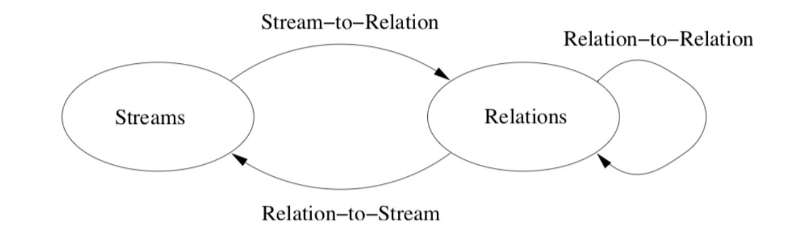
stream-to-Relation: windows
relation-to-stream: ISTREAM, DSTREAM,RSTREAM
When do stream<=> relation interaction happens:
every relation has a new version at each processing time
When does the system write ouput
at each processing time
want triggers ofr when to output
Google Dataflow model
windowing
trigger
incremental
example with water mark
Spark Structured Streaming
Append output mode
Outputs to other systems
fault recovery:
transaciton approach
At-least-once approach
Query Planning & execution
streaming operators
Query planning: incrementalize a SQL query
Fault Tolerance: need to log
outputted ,read ,state
must log what we read at each proc. time before output for the proc. time
log operator state asynchronously
example structured streaming
Parallel processing
Lec19 Security and data privacy
Security requirements
Some security goals
authentication + authorization + auditing
confidentiality, integrity, privacy
Thread models
useful building blocks:
encryption
cryptographic hash functions
secure channels, egTLS
Differenctial privacy
user talk to database server
how to define privacy is difficult
differential privacy:
inject some answer, potential random result
A and B are two different dataset:
properties:
composition: Adversary’s ability to distinguish DBs A & B grows in a bounded way with each query
Parallel composition:
Easy to compute
Computing Differential privacy bounds:
COUNT()
AVERAGE()
Sensitivity
stability: set difference
change the key, one group will decrease 1 and another will increase 1


 symmetric
symmetric